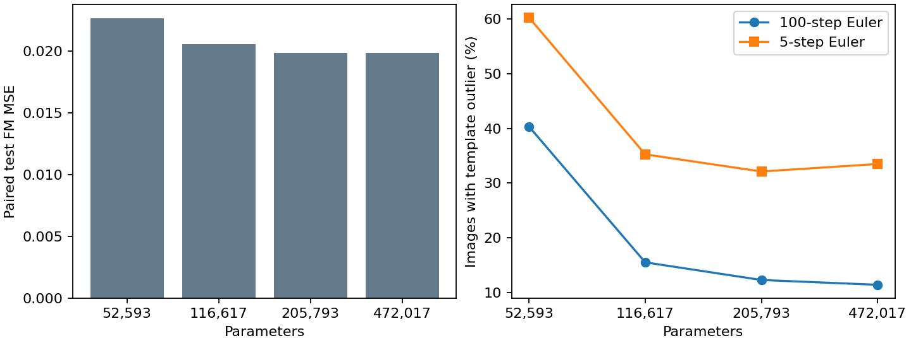

2026-10-20
Recommend the 205,793-parameter model: it uses 56.4% fewer parameters than the original 472,017-parameter model, with essentially matched held-out FM loss and similar shape diagnostics. This is the smallest tested model retaining approximately original quality, not a proven minimum over architectures.
The 116,617-parameter model converged and uses 75.3% fewer parameters than the original, but its test loss is 3.4% higher and its 100-step shape-template outlier rate is higher. Keep it as a size/quality tradeoff, rather than calling it equivalent.
| Parameters | Epochs | Test FM MSE | Template-outlier images | Count outside 1–4 |
|---|---|---|---|---|
| 52,593 | 500 | 0.022687 | 413/1024 (40.3%) | 48/1024 |
| 116,617 | 500 | 0.020572 | 159/1024 (15.5%) | 12/1024 |
| 205,793 | 500 | 0.019893 | 126/1024 (12.3%) | 1/1024 |
| 472,017 | 200 | 0.019892 | 117/1024 (11.4%) | 15/1024 |

The paired 117k-minus-200k outlier difference is 3.22 percentage points; the 95% paired bootstrap interval is [0.68, 5.86]. This interval measures source-sampling variability for these trained checkpoints, not training-seed variability.
Template flags compare thresholded components against real training shapes. The cutoff is calibrated on held-out real components and flags 26/1024 real reference images. Flags are not certified invalid shapes and do not test spacing, intensity, or inverse reconstruction. Detected counts alone cannot certify valid geometry. Both 117k and 200k reached nearly flat validation loss late in training. The 53k model retained a much larger shape-fidelity deficit; the rejected 100k run was removed as requested.
All retained compact runs have 500-epoch histories, loss plots, ten checkpoints and ten previews. Final 117k and 200k checkpoints load through the public model loader and produce finite outputs.
Rebuild with uv run --no-sync --python .venv/bin/python python scripts/report_shapes_capacity.py.